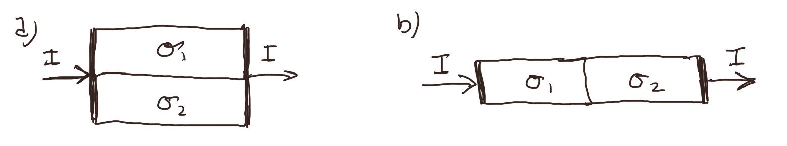
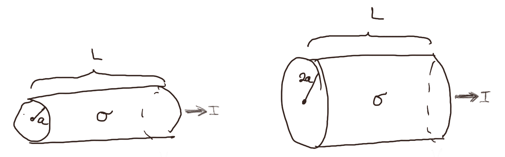

(Lærebok 8.5)
Figuren under viser to motstander som er like store men består av forskjellige materialer med forskjellig ledningsevne \( \sigma_1 > \sigma_2 \).

a) I hvilken av motstandene er effektttapet størst i figur a?
1
Det er flere måter å resonnere på her. Den enkleste måten er nok å ta utgangspunkt i at effekttapet er \( P_I = V^2/R \). Effekttapet blir derfor størst i motstanden med minst motstand. Vi forventer at motstanden vil være minst i motstanden med størst ledningsevne. Vi får derfor størst effekttap i motstanden med størst ledningsevne.
b) I hvilken av motstandene er effekttapet størst i figur b?
2
I dette tilfellet er strømmen \( I \) den samme gjennom begge motstandene. Det vil derfor være lurt å ta utgangspunkt i at effekttapet gjennom en motstand er \( P_I = R I^2 \). Siden \( I \) er den samme, vil motstanden med størst \( R \) ha størst effekttap. Det er motstanden med minst ledningsevne \( \sigma \) som har størst \( R \) og som gir størst effekttap.
Figuren under viser to sylindriske motstander laget av et materiale med ledningsevne \( \sigma \). De er begge \( L \) lange. Den ene har radius \( a \) og den andre har radius \( 2a \). Det går en strøm \( I \) gjennom motstanden.

a) I hvilken motstand er effekttapet per volum, \( p_I \), størst?
Venstre
Vi vet at effekttapet per volum er \( p_I = \vec{E} \cdot \vec{J} \). Vi antar at \( \vec{J} \) er uniform gjennom et tverrsnitt \( A \) i motstanden slik at \( J = I/A \). Ohms lov gir da det elektriske feltet \( E = J/\sigma \), hvor \( J \) og \( E \) peker i samme retning slik at \( \vec{J} \cdot \vec{E} = JE \). Vi finner da \( p_I \) som $$ \begin{equation} p_I = J E = \frac{1}{\sigma} J^2 = \frac{I^2}{A^2 \sigma} \; . \tag{7} \end{equation} $$ Vi ser at \( I \) og \( \sigma \) er den samme for de to motstandene. Effekttapet er størst der hvor \( A \) er minst, som er i motstanden med radius \( a \).
b) I hvilken motstand er effekttapet, \( P_I \), størst?
Venstre
Vi kan nå bruke resultatet vi har fra før. \( p_I \) er uniform gjennom hele motstanden, slik at: $$ \begin{equation} P_I = V p_I = A L p_I = A L \frac{I^2}{A^2 \sigma} = \frac{I^2 L}{A \sigma} \tag{8} \end{equation} $$ Vi ser derfor at det er motstanden med minst areal \( A \) som har størst effekttap.
(Lærebok 8.5.1)